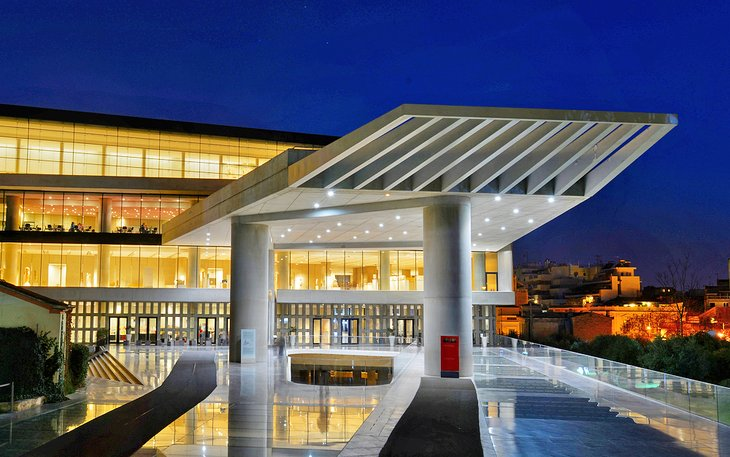
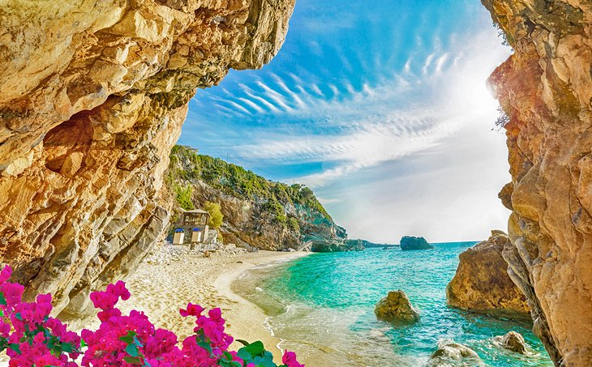

Sights to see
1. Acropolis, Athens

Considered the symbol of Athens and Greece, and indeed of Western civilization, the Acropolis is a rocky mound rising in the heart of modern Athens, crowned by three magnificent temples dating from the 5th century BC. The best known and most distinctive is the Parthenon, originally made up of 58 columns supporting a roof and decorated by ornate pediments and a frieze.
2. Acropolis Museum, Athens

The Acropolis Museum is one of Athens' most-visited tourist attractions. Designed by Swiss architect Bernard Tschumi, it is an ultra-modern glass and steel structure with light and airy exhibition spaces, built specifically to display ancient finds from the Acropolis.
3. Corfu

One of Greece's top tourist destinations, Corfu sits in the Ionian Sea off the west coast of the mainland. The capital, Corfu Town, is a UNESCO World Heritage site, thanks to its elegant Italianate architecture – it was ruled by the Venetians for several centuries. Explore its romantic pedestrian-only streets to discover two 16th-century fortresses and the arcaded Liston, lined by old-fashioned cafes.
4. Delphi

On the Greek mainland, Delphi is a UNESCO World Heritage site. Built on the lower slopes of Mount Parnassus, overlooking a dramatic ravine, the site was sacred to the ancients, who came here on pilgrimages to worship Apollo (god of light, prophecy, music, and healing) and to ask advice from the mythical Oracle.It is made up of the crumbling ruins of numerous temples, a theater, and stadium, dating from between the 8th century BC and the 2nd century AD.